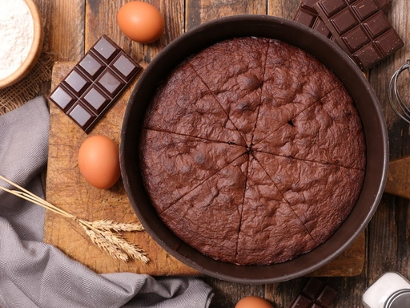

Les douceurs de Maryam
Nos Pâtisseries
Nos Recettes
Livre d'Or
Contact
Nos Recettes
Le gateau au chocolat

Ingrédients
200 g de chocolat à pâtisser noir
100 g de beurre
3 oeufs
50 g de farine
100 g de sucre en poudre
Préparation
Préchauffez votre four à 180°C (thermostat 6).
Dans une casserole, faites fondre le chocolat et le beurre coupé en morceaux à feu très doux.
Dans un saladier, ajoutez le sucre, les oeufs, la farine. Mélangez.
Ajoutez le mélange chocolat/beurre. Mélangez bien.
Beurrez et farinez votre moule puis y versez la pâte à gâteau.
Faites cuire au four environ 20 minutes.
A la sortie du four le gâteau ne paraît pas assez cuit. C'est normal, laissez-le refroidir puis démoulez- le.